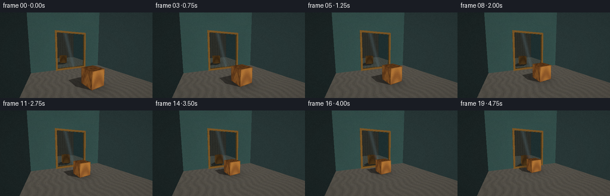
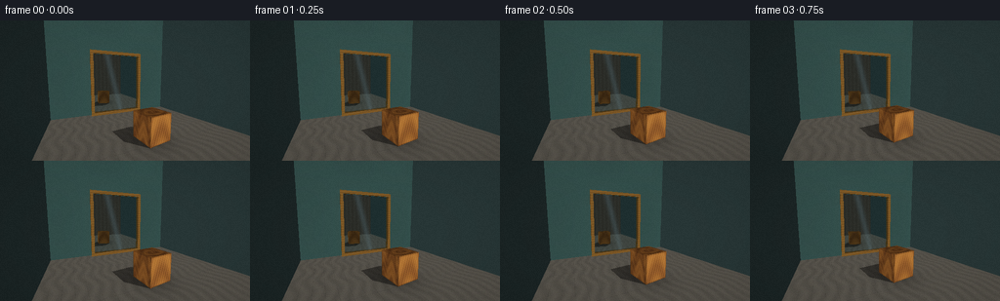
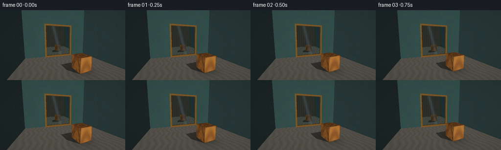
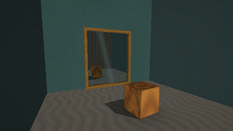
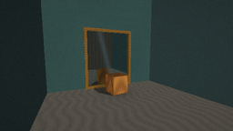
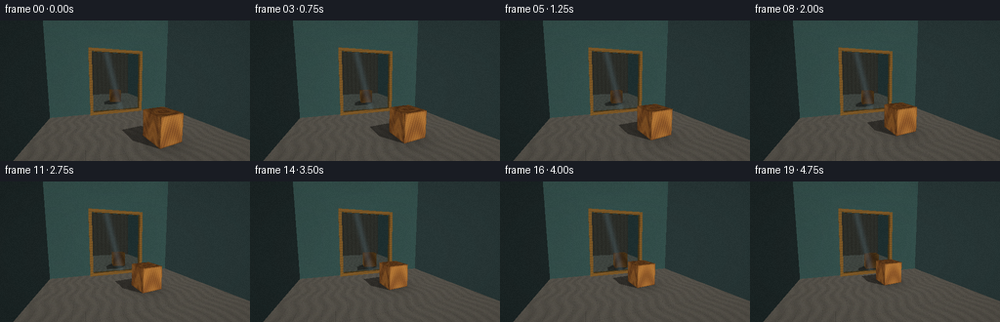
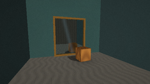
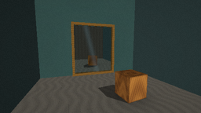

CODING AGENTS AS PIXEL WORLD MODELS
traex/DeepSeek-V4.1-Flash · phygen_061
点击播放 · 原生 RGB 像素
逐轮保存的候选
回放视频、检查图与代码变化。
每份候选均可单独播放。实际图片检查记录在下方工具轨迹中。
候选 01播放与检查图
点击播放 · 原生 RGB 像素


展开代码变化
--- 上一保存版本
+++ 本次保存版本
@@ -0,0 +1,417 @@
+from pathlib import Path
+
+import numpy as np
+from PIL import Image, ImageFilter
+
+import artifact_io
+
+
+WIDTH = 256
+HEIGHT = 144
+FRAMES = 20
+SUPERSAMPLE = 2
+EPS = 1e-4
+
+
+def srgb(rgb):
+ values = np.asarray(rgb, dtype=np.float64)
+ return np.where(
+ values <= 0.04045,
+ values / 12.92,
+ ((values + 0.055) / 1.055) ** 2.4,
+ )
+
+
+def normalize(vector):
+ vector = np.asarray(vector, dtype=np.float64)
+ return vector / np.linalg.norm(vector)
+
+
+def camera_rays(width, height):
+ camera = np.array([2.60, 2.23, -5.00])
+ target = np.array([0.08, 1.55, 0.62])
+ forward = normalize(target - camera)
+ right = normalize(np.cross(forward, np.array([0.0, 1.0, 0.0])))
+ up = np.cross(right, forward)
+
+ focal = 247.0
+ xs = (np.arange(width, dtype=np.float64) + 0.5 - width * 0.5) / focal
+ ys = (height * 0.5 - np.arange(height, dtype=np.float64) - 0.5) / focal
+ gx, gy = np.meshgrid(xs, ys)
+ directions = (
+ forward[None, None, :]
+ + gx[:, :, None] * right[None, None, :]
+ + gy[:, :, None] * up[None, None, :]
+ )
+ directions = directions.reshape(-1, 3)
+ directions /= np.linalg.norm(directions, axis=1, keepdims=True)
+ origins = np.broadcast_to(camera, directions.shape).copy()
+ return origins, directions, camera
+
+
+def box_intersection(origins, directions, center, half, yaw=0.0):
+ count = origins.shape[0]
+ c = np.cos(yaw)
+ s = np.sin(yaw)
+
+ rel = origins - center
+ local_o = np.column_stack(
+ (c * rel[:, 0] - s * rel[:, 2], rel[:, 1], s * rel[:, 0] + c * rel[:, 2])
+ )
+ local_d = np.column_stack(
+ (
+ c * directions[:, 0] - s * directions[:, 2],
+ directions[:, 1],
+ s * directions[:, 0] + c * directions[:, 2],
+ )
+ )
+
+ safe_d = np.where(np.abs(local_d) < 1e-9, 1e-9, local_d)
+ t0 = (-half - local_o) / safe_d
+ t1 = (half - local_o) / safe_d
+ near = np.minimum(t0, t1)
+ far = np.maximum(t0, t1)
+ t_enter = np.max(near, axis=1)
+ t_exit = np.min(far, axis=1)
+ t = np.where(t_enter > EPS, t_enter, t_exit)
+ hit = (t_enter <= t_exit) & (t_exit > EPS) & (t > EPS)
+
+ local_hit = local_o + local_d * t[:, None]
+ scale = np.abs(local_hit) / half
+ axis = np.argmax(scale, axis=1)
+ local_normal = np.zeros_like(local_hit)
+ rows = np.arange(count)
+ local_normal[rows, axis] = np.sign(local_hit[rows, axis])
+ local_normal[local_normal == 0.0] = 1.0
+
+ normal = np.column_stack(
+ (
+ c * local_normal[:, 0] + s * local_normal[:, 2],
+ local_normal[:, 1],
+ -s * local_normal[:, 0] + c * local_normal[:, 2],
+ )
+ )
+ return hit, t, local_hit, normal
+
+
+def plane_intersection(origins, directions, axis, value, positive):
+ denom = directions[:, axis]
+ hit = np.abs(denom) > 1e-9
+ t = np.full(origins.shape[0], np.inf)
+ t[hit] = (value - origins[hit, axis]) / denom[hit]
+ hit &= t > EPS
+ normal = np.zeros_like(origins)
+ normal[:, axis] = positive
+ return hit, t, normal
+
+
+def trace_scene(origins, directions, cube_center, include_mirror=True):
+ count = origins.shape[0]
+ best_t = np.full(count, np.inf)
+ object_id = np.zeros(count, dtype=np.int8)
+ best_p = np.zeros_like(origins)
+ best_n = np.zeros_like(origins)
+ best_local = np.zeros_like(origins)
+
+ def offer(mask, t, normal, local=None, oid=0):
+ nonlocal best_t, object_id, best_p, best_n, best_local
+ take = mask & (t < best_t)
+ if not np.any(take):
+ return
+ best_t[take] = t[take]
+ object_id[take] = oid
+ best_p[take] = origins[take] + directions[take] * t[take, None]
+ best_n[take] = normal[take]
+ best_local[take] = local[take] if local is not None else 0.0
+
+ cube_hit, cube_t, cube_local, cube_n = box_intersection(
+ origins, directions, cube_center, np.array([0.47, 0.50, 0.47]), yaw=0.12
+ )
+ offer(cube_hit, cube_t, cube_n, cube_local, 1)
+
+ floor_hit, floor_t, floor_n = plane_intersection(origins, directions, 1, 0.0, 1.0)
+ offer(floor_hit, floor_t, floor_n, oid=2)
+
+ wall_hit, wall_t, wall_n = plane_intersection(origins, directions, 2, 2.14, -1.0)
+ offer(wall_hit, wall_t, wall_n, oid=3)
+
+ if include_mirror:
+ mirror_hit, mirror_t, mirror_n = plane_intersection(
+ origins, directions, 2, 1.985, -1.0
+ )
+ mirror_p = origins + directions * mirror_t[:, None]
+ mirror_hit &= (
+ (np.abs(mirror_p[:, 0]) <= 1.42)
+ & (mirror_p[:, 1] >= 0.18)
+ & (mirror_p[:, 1] <= 3.54)
+ )
+ offer(mirror_hit, mirror_t, mirror_n, oid=4)
+
+ frame_boxes = (
+ (np.array([-1.50, 1.86, 1.915]), np.array([0.085, 1.79, 0.060])),
+ (np.array([1.50, 1.86, 1.915]), np.array([0.085, 1.79, 0.060])),
+ (np.array([0.0, 3.64, 1.915]), np.array([1.585, 0.085, 0.060])),
+ (np.array([0.0, 0.095, 1.915]), np.array([1.585, 0.085, 0.060])),
+ )
+ for center, half in frame_boxes:
+ frame_hit, frame_t, frame_local, frame_n = box_intersection(
+ origins, directions, center, half
+ )
+ offer(frame_hit, frame_t, frame_n, frame_local, 5)
+
+ front_hit, front_t, front_n = plane_intersection(origins, directions, 2, -6.15, 1.0)
+ offer(front_hit, front_t, front_n, oid=6)
+
+ left_hit, left_t, left_n = plane_intersection(origins, directions, 0, -3.55, 1.0)
+ offer(left_hit, left_t, left_n, oid=7)
+ right_hit, right_t, right_n = plane_intersection(origins, directions, 0, 3.65, -1.0)
+ offer(right_hit, right_t, right_n, oid=8)
+
+ return object_id, best_t, best_p, best_n, best_local
+
+
+def smoothstep(edge0, edge1, value):
+ x = np.clip((value - edge0) / (edge1 - edge0), 0.0, 1.0)
+ return x * x * (3.0 - 2.0 * x)
+
+
+def cube_shadow(origins, directions, cube_center):
+ hit, _, _, _ = box_intersection(
+ origins, directions, cube_center, np.array([0.47, 0.50, 0.47]), yaw=0.12
+ )
+ return hit
+
+
+def shade_surface(
+ object_id,
+ positions,
+ normals,
+ local,
+ view_direction,
+ camera,
+ cube_center,
+ in_reflection=False,
+):
+ count = positions.shape[0]
+ color = np.zeros((count, 3), dtype=np.float64)
+
+ key_direction = normalize([-0.52, 0.86, -0.62])
+ fill_direction = normalize([0.68, 0.46, 0.30])
+
+ diffuse_key = np.maximum(normals @ key_direction, 0.0)
+ diffuse_fill = np.maximum(normals @ fill_direction, 0.0)
+ half_key = normalize(key_direction + np.array([0.0, 0.35, 1.0]))
+ specular = np.maximum(normals @ half_key, 0.0) ** 32
+
+ shadow_origin = positions + normals * 0.006
+ shadow = cube_shadow(shadow_origin, np.broadcast_to(key_direction, positions.shape), cube_center)
+
+ cube_mask = object_id == 1
+ if np.any(cube_mask):
+ q = local[cube_mask]
+ edge_distance = np.minimum.reduce(
+ [
+ 0.47 - np.abs(q[:, 0]),
+ 0.50 - np.abs(q[:, 1]),
+ 0.47 - np.abs(q[:, 2]),
+ ]
+ )
+ # The normal axis is flush with the face, so use the two tangential axes.
+ axis = np.argmax(np.abs(normals[cube_mask]), axis=1)
+ edge_distance = np.full(q.shape[0], 10.0)
+ for index in range(3):
+ use = axis == index
+ for other in range(3):
+ if other != index:
+ edge_distance[use] = np.minimum(
+ edge_distance[use],
+ np.minimum(
+ 0.50 - np.abs(q[use, other]),
+ (0.47 if other != 1 else 0.50) - np.abs(q[use, other]),
+ ),
+ )
+ edge = 0.60 + 0.40 * smoothstep(0.0, 0.065, edge_distance)
+
+ ring_radius = np.sqrt((q[:, 0] * 0.80) ** 2 + (q[:, 2] * 0.95) ** 2)
+ grain = (
+ 0.50
+ + 0.28 * np.sin(23.0 * ring_radius + 4.8 * q[:, 1] + 1.3 * np.sin(8.0 * q[:, 2]))
+ + 0.14 * np.sin(57.0 * q[:, 0] + 17.0 * q[:, 1] + 3.0 * np.sin(13.0 * q[:, 2]))
+ + 0.08 * np.sin(103.0 * q[:, 1] + 16.0 * q[:, 0])
+ )
+ grain = np.clip(grain, 0.0, 1.0)
+ dark_wood = srgb([0.38, 0.205, 0.080])
+ light_wood = srgb([0.67, 0.405, 0.155])
+ albedo = dark_wood[None, :] * (1.0 - grain[:, None]) + light_wood[None, :] * grain[:, None]
+ albedo *= edge[:, None]
+ light = 0.18 + 1.22 * diffuse_key[cube_mask] * (1.0 - 0.88 * shadow[cube_mask])
+ light += 0.20 * diffuse_fill[cube_mask]
+ color[cube_mask] = albedo * light[:, None]
+ color[cube_mask] += srgb([1.0, 0.70, 0.36])[None, :] * (
+ 0.11 * specular[cube_mask] * (1.0 - shadow[cube_mask])
+ )[:, None]
+
+ floor_mask = object_id == 2
+ if np.any(floor_mask):
+ p = positions[floor_mask]
+ board_x = np.mod(p[:, 0] + 3.55, 0.36)
+ board_z = np.mod(p[:, 2] + 6.15, 2.10)
+ seam = smoothstep(0.0, 0.012, board_x) * smoothstep(0.0, 0.014, board_z)
+ plank_wave = 0.5 + 0.5 * np.sin(p[:, 0] * 16.0 + np.sin(p[:, 2] * 4.0) * 2.0)
+ floor_albedo = srgb([0.30, 0.285, 0.255])[None, :] * (
+ 0.78 + 0.18 * plank_wave[:, None]
+ )
+ floor_albedo *= (0.62 + 0.38 * seam)[:, None]
+
+ cx, cz = cube_center[0], cube_center[2]
+ contact = np.exp(
+ -(((p[:, 0] - cx) / 0.70) ** 2 + ((p[:, 2] - cz) / 0.78) ** 2)
+ )
+ light = 0.17 + 0.95 * (1.0 - 0.88 * shadow[floor_mask])
+ light *= 1.0 - 0.58 * contact
+ light += 0.11 * diffuse_fill[floor_mask]
+ color[floor_mask] = floor_albedo * light[:, None]
+
+ wall_mask = object_id == 3
+ if np.any(wall_mask):
+ p = positions[wall_mask]
+ subtle_panel = 0.94 + 0.06 * np.sin(p[:, 0] * 1.2 + 0.8) * np.sin(p[:, 1] * 0.7)
+ wall_albedo = srgb([0.24, 0.385, 0.365])[None, :] * subtle_panel[:, None]
+ light = 0.23 + 0.62 * diffuse_key[wall_mask] + 0.12 * diffuse_fill[wall_mask]
+ color[wall_mask] = wall_albedo * light[:, None]
+
+ frame_mask = object_id == 5
+ if np.any(frame_mask):
+ p = positions[frame_mask]
+ brush = 0.87 + 0.13 * np.sin(p[:, 1] * 44.0 + p[:, 0] * 3.0)
+ brass = srgb([0.47, 0.315, 0.115])[None, :] * brush[:, None]
+ light = 0.18 + 1.02 * diffuse_key[frame_mask] * (1.0 - 0.60 * shadow[frame_mask])
+ light += 0.14 * diffuse_fill[frame_mask]
+ color[frame_mask] = brass * light[:, None]
+ color[frame_mask] += srgb([1.0, 0.80, 0.43])[None, :] * (
+ 0.38 * specular[frame_mask]
+ )[:, None]
+
+ front_mask = object_id == 6
+ if np.any(front_mask):
+ p = positions[front_mask]
+ wall_albedo = np.broadcast_to(
+ srgb([0.35, 0.315, 0.27]), (p.shape[0], 3)
+ ).copy()
+ vertical = 0.91 + 0.09 * np.sin(p[:, 0] * 13.0)
+ wall_albedo *= vertical[:, None]
+ light = 0.27 + 0.24 * diffuse_fill[front_mask]
+ color[front_mask] = wall_albedo * light[:, None]
+
+ window = (
+ (p[:, 0] > 1.05)
+ & (p[:, 0] < 2.95)
+ & (p[:, 1] > 0.78)
+ & (p[:, 1] < 2.72)
+ )
+ if np.any(window):
+ wp = p[window]
+ glass = srgb([0.55, 0.72, 0.78])[None, :]
+ sky = 0.60 + 0.23 * (wp[:, 1] - 0.78) / 1.94
+ color_indices = np.flatnonzero(front_mask)[window]
+ color[color_indices] = glass * sky[:, None]
+ frame_region = (
+ (np.abs(wp[:, 0] - 2.0) < 0.025)
+ | (np.abs(wp[:, 1] - 1.74) < 0.025)
+ | (wp[:, 0] < 1.12)
+ | (wp[:, 0] > 2.88)
+ | (wp[:, 1] < 0.85)
+ | (wp[:, 1] > 2.65)
+ )
+ color[color_indices[frame_region]] = srgb([0.56, 0.50, 0.40]) * 0.48
+
+ side_mask = (object_id == 7) | (object_id == 8)
+ if np.any(side_mask):
+ light = 0.18 + 0.32 * diffuse_fill[side_mask]
+ color[side_mask] = srgb([0.20, 0.285, 0.285])[None, :] * light[:, None]
+
+ if in_reflection:
+ color *= 0.92
+ return color
+
+
+def render(cube_center):
+ width = WIDTH * SUPERSAMPLE
+ height = HEIGHT * SUPERSAMPLE
+ origins, directions, camera = camera_rays(width, height)
+ ids, _, positions, normals, local = trace_scene(
+ origins, directions, cube_center, include_mirror=True
+ )
+ view_direction = -directions
+ linear = shade_surface(
+ ids, positions, normals, local, view_direction, camera, cube_center
+ )
+
+ mirror = ids == 4
+ if np.any(mirror):
+ mirror_origins = positions[mirror] + np.array([0.0, 0.0, -0.001])
+ mirror_directions = directions[mirror].copy()
+ mirror_directions[:, 2] *= -1.0
+ sids, _, spos, snorm, slocal = trace_scene(
+ mirror_origins, mirror_directions, cube_center, include_mirror=False
+ )
+ reflected = shade_surface(
+ sids,
+ spos,
+ snorm,
+ slocal,
+ -mirror_directions,
+ camera,
+ cube_center,
+ in_reflection=True,
+ )
+ reflected *= srgb([0.78, 0.89, 0.91])[None, :]
+
+ # A restrained diagonal sheen makes the silvered surface legible.
+ mx = positions[mirror]
+ sheen = np.exp(
+ -(
+ (mx[:, 0] - (0.18 + 0.25 * (mx[:, 1] - 1.8))) ** 2
+ / 0.030
+ )
+ )
+ reflected += srgb([0.55, 0.72, 0.77])[None, :] * (0.055 * sheen)[:, None]
+ linear[mirror] = reflected
+
+ linear = linear.reshape(height, width, 3)
+ mapped = 1.0 - np.exp(-np.maximum(linear, 0.0) * 1.22)
+ image = np.power(np.clip(mapped, 0.0, 1.0), 1.0 / 2.2)
+ image = np.clip(image * 255.0 + 0.5, 0.0, 255.0).astype(np.uint8)
+ return Image.fromarray(image).resize((WIDTH, HEIGHT), Image.Resampling.LANCZOS)
+
+
+def main():
+ case_dir = Path(__file__).resolve().parent
+ frames = []
+ for index in range(FRAMES):
+ progress = index / (FRAMES - 1)
+ # Constant approach speed reads clearly in only five seconds.
+ cube_z = -1.55 + 2.34 * progress
+ cube_center = np.array([0.0, 0.505, cube_z])
+ frame = render(cube_center)
+
+ # A tiny amount of optical texture prevents flat digital gradients.
+ array = np.asarray(frame, dtype=np.int16)
+ rng = np.random.default_rng(9100 + index)
+ grain = rng.integers(-2, 3, size=(HEIGHT, WIDTH, 1), dtype=np.int16)
+ array = np.clip(array + grain, 0, 255).astype(np.uint8)
+
+ yy, xx = np.mgrid[0:HEIGHT, 0:WIDTH]
+ vignette = 1.0 - 0.055 * (
+ ((xx - WIDTH / 2) / (WIDTH / 2)) ** 2
+ + ((yy - HEIGHT / 2) / (HEIGHT / 2)) ** 2
+ )
+ array = np.clip(array.astype(np.float64) * vignette[:, :, None], 0, 255).astype(np.uint8)
+ frames.append(array)
+ print(f"rendered {index + 1:02d}/{FRAMES}", flush=True)
+
+ artifact_io.save(np.stack(frames), case_dir)
+
+
+if __name__ == "__main__":
+ main()
候选 02播放与检查图
点击播放 · 原生 RGB 像素


展开代码变化
--- 上一保存版本
+++ 本次保存版本
@@ -28,8 +28,8 @@
def camera_rays(width, height):
- camera = np.array([2.60, 2.23, -5.00])
- target = np.array([0.08, 1.55, 0.62])
+ camera = np.array([1.78, 2.18, -5.00])
+ target = np.array([-0.04, 1.50, 0.58])
forward = normalize(target - camera)
right = normalize(np.cross(forward, np.array([0.0, 1.0, 0.0])))
up = np.cross(right, forward)
@@ -391,8 +391,8 @@
for index in range(FRAMES):
progress = index / (FRAMES - 1)
# Constant approach speed reads clearly in only five seconds.
- cube_z = -1.55 + 2.34 * progress
- cube_center = np.array([0.0, 0.505, cube_z])
+ cube_z = -1.55 + 2.00 * progress
+ cube_center = np.array([-0.70, 0.505, cube_z])
frame = render(cube_center)
# A tiny amount of optical texture prevents flat digital gradients.
可观测工具轨迹
实际执行的命令与返回图片。
命令 1exit 0
/bin/bash -c "pwd && rg --files -g 'prompt.txt' -g 'GENERATION_RULES.md' -g 'task_spec.json' -g '"'!**/.git/**'"'"
命令 2exit 0
/bin/bash -c 'ls -la'
命令 3exit 0
/bin/bash -c 'cat prompt.txt'
命令 4exit 0
/bin/bash -c 'cat GENERATION_RULES.md'
命令 5exit 0
/bin/bash -c 'cat task_spec.json'
命令 6exit 0
/bin/bash -c "sed -n '1,240p' artifact_io.py"
命令 7exit 0
/bin/bash -c "sed -n '1,260p' player_template.html"
命令 8exit 0
/bin/bash -c "python - <<'PY'
import numpy, PIL
print('numpy', numpy.__version__)
print('PIL', PIL.__version__)
PY"命令 9exit 1
/bin/bash -c 'python generate.py'
命令 10exit 1
/bin/bash -c 'python generate.py'
命令 11exit 0
/bin/bash -c "rg -n '\\*=' generate.py"
命令 12exit 0
/bin/bash -c "nl -ba generate.py | sed -n '288,306p'"
命令 13exit 0
/bin/bash -c 'python generate.py'
命令 14exit 0
/bin/bash -c 'cp inspection.png candidate_01_inspection.png && cp -r frames candidate_01_frames'
命令 15exit 0
/bin/bash -c 'python generate.py'
命令 16exit 0
/bin/bash -c 'cp inspection.png candidate_02_inspection.png && cp -r frames candidate_02_frames'
命令 17exit 0
/bin/bash -c "python - <<'PY'
from PIL import Image
im=Image.open('frames/00.png')
print(im.size, im.getpixel((128,70)), im.getpixel((40,40)))
PY"命令 18exit 0
/bin/bash -c 'python -m py_compile generate.py'
命令 19exit 0
/bin/bash -c 'ls -lh pixels.npz index.html inspection.png transition_check.png frames/00.png frames/19.png'
命令 20exit 0
/bin/bash -c "python - <<'PY'
import json
from pathlib import Path
import numpy as np
from PIL import Image
p=np.load('pixels.npz')['pixels']
print('pixels', p.shape, p.dtype)
print('pngs', len(list(Path('frames').glob('*.png'))))
im=Image.open('frames/00.png')
print('first', im.size, im.mode)
d=json.loads(Path('task_spec.json').read_text())
print('spec', d)
print('html', Path('index.html').stat().st_size)
PY"视觉工具实际返回图片 1

视觉工具实际返回图片 2

视觉工具实际返回图片 3

视觉工具实际返回图片 4

视觉工具实际返回图片 5

视觉工具实际返回图片 6

视觉工具实际返回图片 7

保存候选 2 份；完成命令 20 次；可验证图片返回 7 张。原始 API 响应与完整日志保留在本地。